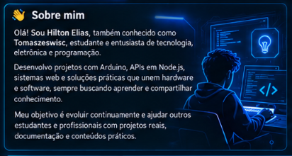

👋 Sobre mim
Olá! Sou Hilton Elias, também conhecido como Tomaszeswisc, estudante e entusiasta de tecnologia, eletrônica e programação.
Desenvolvo projetos com Arduino, APIs em Node.js, sistemas web e soluções práticas que unem hardware e software, sempre buscando aprender e compartilhar conhecimento.
Meu objetivo é evoluir continuamente e ajudar outros estudantes e profissionais com projetos reais, documentação e conteúdos práticos.

🚀 Tecnologias
▣ Projetos em destaque
DS-Eletroeletronica
14 experimentos Arduino com circuitos, código C/C++ e guias individuais.
C++ ☆ 2apiFinance
API financeira com autenticação e transações. Node.js, Express e MySQL.
JavaScript ☆ 0apiInventory
API de gerenciamento de produtos. Node.js, Express e MySQL.
JavaScript ☆ 0api-troca-tudo
Rotas de login e produtos para uma plataforma de trocas.
JavaScript ☆ 2spa_quitanda
API para consulta e cadastro de produtos com Express e MySQL.
JavaScript ☆ 0senai-finance
Interface educacional de controle financeiro com apresentação e login. HTML e CSS.
HTML ☆ 1Nenhum projeto encontrado.
APIs em revisão de segurança, conforme os registros existentes. Explore o código e a documentação de cada repositório.
⌁ DS-Eletroeletronica — Índice de 14 projetos
Circuitos e guias catalogados no repositório. A documentação não certifica testes físicos ou de simulação.